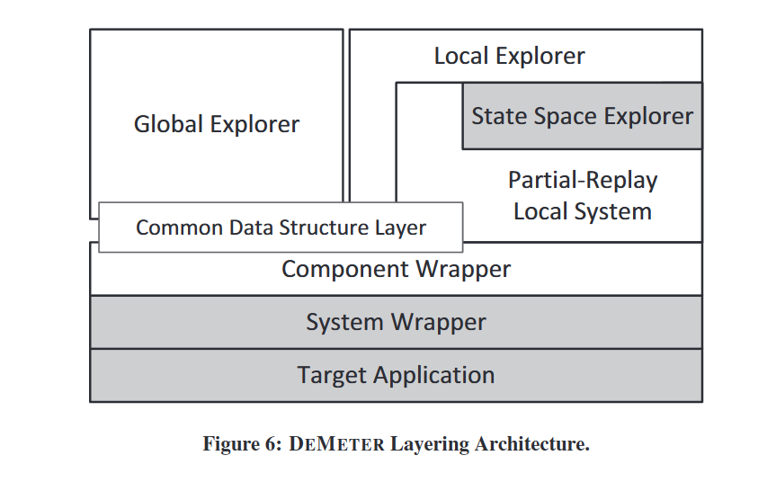

组会论文
条评论通过动态Interface约简（Reduction）实现软件的模型检测
实现级别的软件模型检测。直接通过系统实现检测软件的缺陷。但是状态空间爆炸导致扩展性很差。DeMeter的贡献：1、提出动态 Interface约简，新的约简方法。2、用合理的工作量，在现有的 MC 中实现了动态 Interface 约简的框架。3、为框架提供了分布式运行时环境引擎，支持了并行分布式的 MC。
与 MaceMC 和 MoDist 集成，每一个差不多1000行代码工作量。可约简5到10^5倍的状态空间（Paxos、BerkeleyDB、Chord、Pastry。DeMeter 探索了Paxos的全部有意义的状态空间，提供了非常可靠的保障。
Dynamic Interface Reduction (DIR) Interface，界面？接口？连接？
两个原则：
1、check components separately。（？）
软件通过封装隐藏细节。基于这个，一个典型的分布式系统就可以看作是一组进程通过消息交换交互。message traces （of a component and the rest of system）决定了这一component行为。
Interface 行为以外的所有行为，都是 Locally contained。给定了所有component的 InterBehav，DIR就可以只看本地状态空间。不需要去探索全局状态空间。（就像是硬件虚拟化、一叶障目的感觉）
2、discover interface behavior dynamically.(?)
分别 MC 各个组件，需要知道 interface behavior。DIR就在探索时动态发现这类行为。这个过程忽略组件内的复杂度，它不会通过interface传播。并且这个过程是自动的，所以不用手动指定（枯燥、error-prone、不准确）。而且，只会出现现实中会有的 interface behav，避免了 false positive。
主要思路：对于多个本地的执行流，它们拥有不同的本地状态却有相同的发送序列。这些本地状态的变化有可能不会传导给整个系统。所以就像 cache hit 一样。
所以，只要interface很好地掩盖了实现细节，DIR就能很好地工作。
由例子，过渡到DIR的系统模型和算法
系统模型
DeMeter 检查标准的并发/分布式系统。抽象地说，系统从一个初始状态出发，经过状态转换到达下一个状态。一个转换是 enabled 如果 not blocked （？？？）并且能够在当前状态下被调度到。
环境 是用来建模状态转换当中的 非确定性 的（状态图中的分叉）。这种分叉就包括线程进程调度、消息顺序、时钟、错误，和其他很多不确定性（随机）。
实现级别的Mchecker一般有两大块。
一是 system wrapper。暴露处于下层的系统并允许环境中不确定性的控制。
二是 exploration mechanism，建在 syswrapper 上层，探索系统状态空间——记录和控制非确定性以寻找软件缺陷：异常，崩溃，断言，安全性违例。
处于下层的 system：C 为 components 的集合。（每个节点）。Components 通过 interface objects 进行互动（通讯信道、共享对象）。状态转变有 internal（don’t access interface objects）和 interface transitions（access）。
interface transition： output and input。（读和写信道、共享内存、收发消息）
两个transition 依赖 如果它们的执行互相影响：一个会使另一个 enable、disable，或调换顺序产生不同结果。比如两个竞争的写/读写。
从初始态，系统的执行（transition 序列）被建模为 trace，其中的 transition 拥有dependency <= 关系的偏序。两个偏序等价的 trace 认为相同。给定 trace $\tau$，然后一个 transition t 在之后发生，即可扩展为新 trace τ·t 。同时可定义前缀，。。。。
SKELETON，只有interface transition 的trace。对 component c 的 interface-equivalent，就是说 skel(localc(τ)) = skel(localc(τ’))。
A partial order ($\preceq$) is defined between transitions in the same thread, between a send transition and its corresponding receive transition across threads and processes, and is transitive.
看完本篇剩下的：5小时
想好讲什么：2小时
做ppt：2小时
参考别的：3小时
整个 Local 和 Global explorer 的交互还是很清晰的。
